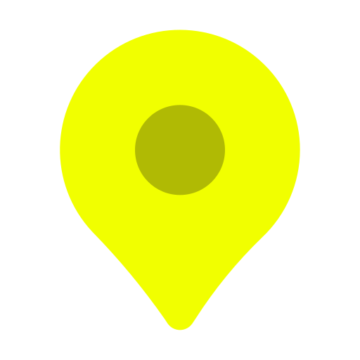

<!DOCTYPE html>
<html lang="en">
  <head>
    <meta charset="UTF-8" />
    <meta http-equiv="X-UA-Compatible" content="IE=edge" />
    <meta name="viewport" content="width=device-width, initial-scale=1.0" />
    <title>Side Menu</title>
    <script src="https://unpkg.com/feather-icons"></script>
    <link rel="preconnect" href="https://fonts.googleapis.com" />
    <link rel="preconnect" href="https://fonts.gstatic.com" crossorigin />
    <link
      href="https://fonts.googleapis.com/css2?family=Abril+Fatface&family=Crimson+Text:ital@0;1&display=swap"
      rel="stylesheet"
    />
    <link
      href="https://cdn.jsdelivr.net/npm/bootstrap@5.3.0-alpha3/dist/css/bootstrap.min.css"
      rel="stylesheet"
      integrity="sha384-KK94CHFLLe+nY2dmCWGMq91rCGa5gtU4mk92HdvYe+M/SXH301p5ILy+dN9+nJOZ"
      crossorigin="anonymous"
    />
    <link rel="stylesheet" href="css/style.css" />
  </head>
  <body>
    <div class="footer2">
      <h6>Status Kualitas Air Sungai</h6>
      <div class="marker">
        <div class="kotak">
          <div>
            
          </div>
          <div class="keterangan">Memenuhi Baku Mutu</div>
        </div>
        <div class="kotak">
          <div>
            
          </div>
          <div class="keterangan">Tercemar Ringan</div>
        </div>
        <div class="kotak">
          <div>
            
          </div>
          <div class="keterangan">Tercemar Sedang</div>
        </div>
        <div class="kotak">
          <div>
            
          </div>
          <div class="keterangan">Tercemar Berat</div>
        </div>
      </div>
      <br />
      <h6>Legenda</h6>
      <div class="marker">
        <div class="kotak2">
          <div class="garis"></div>
          <div class="keterangan">DAS Citarum</div>
        </div>
        <div class="kotak2">
          <div class="garis2"></div>
          <div class="keterangan">Sungai Citarum</div>
        </div>
      </div>
    </div>

    <script>
      feather.replace();
    </script>
  </body>
</html>
